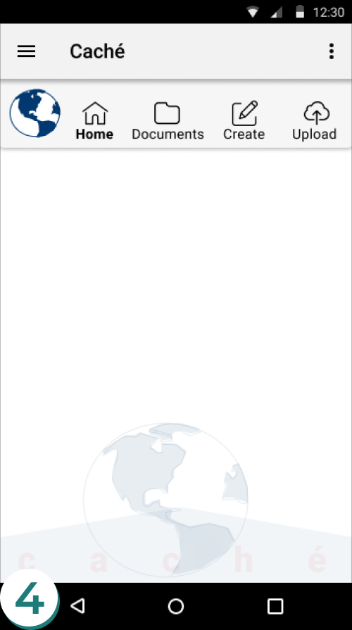
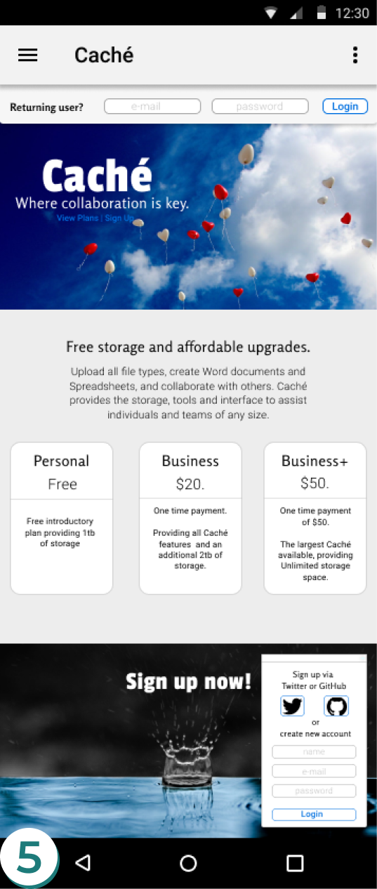
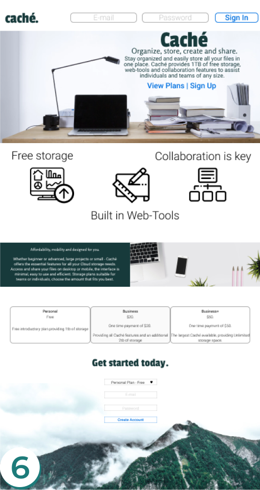

- CACHÉ.
- As the world gets smaller, computer skills become more in demand and many users feel left behind when using these technologies.
-
ROLES
UX + UI Design
User Research
User Testing
Content Writing
Visual Design
Brand & Identity
-
DELIVERABLES
Competitive Analysis
User Surveys + Personas
User Stories + Flows
Visual Design
Branding
Wireframe Sketches
Low + High Fidelity Mockup
User Testing
-
TOOLS
Figma
Paint Shop Pro
Invision
Usability Hub
Google Forms
DISCOVERY ARCHITECTURE DESIGN REPEAT
-
PROBLEM
As connections get faster and innovation continues forward, technological skills increase in demand. With progression comes many brands offering a variety of services, this results in many users feeling unskilled and left behind. Cache is a Cloud service designed specifically for users that compete with technological or resource disadvantages.
-
SOLUTION
Finding a niche is necessary when competing in such a crowded climate. My strategy was to find the core features that everyday users need, then offer these features in a minimal and easy-to-use interface. The scope was a Cloud that is industry standard, yet simple and efficient enough for all users; to inspire confidence navigating new technologies.
-
INSIGHTS
The biggest lesson learned designing Cache was the importance of intensive iteration and user testing. While deep into the project, I was met with roadblocks of spotty research and missteps. I learned to take this failure as invaluable information and a means to improve, exemplifying the importance of multiple iterations and embracing shortcomings.

-
COMPETITIVE ANALYSIS
Research began with a SWOT analysis comparing leading Cloud brands. Many features shared between these brands, the most common user needs, and a MVP begin to take structure.
-
DROPBOX
Save + Access from any device
Share files + folders
File-Syncing
Large amount of free storage
Cross-platform usability
Simple UI / Not bloated
-

ONEDRIVE
Save + Access from any device
Share files + folders
File-Syncing
Large amount of free storage
Microsoft Office Web-Tools
-

GOOGLEDRIVE
Save + Access from any device
Share files + folders
File-Syncing
Large amount of free storage
Google Web-Tools
Industry popularity
Cross-platform usability
-
INSIGHTS TO MVP
·Save + Access from any device
·Share files + folders
·Substantial free storage
·File-Syncing
·Word Processing
-
83%
Must be able to collaborate and meet with others.
-
73%
Be able to share, edit, and allow access to files.
-
61%
Need word document & spreadsheet tools
-
77%
Use their Cloud for business & personal use.
-
GOALS
Launching these into usability testing, I tested 3 users to analyze my information architecture and strategy. Users were tested on abillity to [1] Sign-In & [2] Upload a file

-
USER 1
Beginner: Experienced directional confusion & blindly clicked on screen and asking for directions.

-
USER 2 + 3
Novice: Experienced similar confusion on not knowing where to click. Ultimately completing both tasks, but with some misdirection and back-tracking.
-
INSIGHTS
The tests pointed out that the current issue is how to direct users in the right direction and to better accentuate the routes I want to be taken.
-
BRANDING
Beginning my brand’s visual design, I started with a mind-map and a moodboard to have a path for my style guide.
-
OURSPACE
To feel familiar and attractive - a bright version of a traditional red, green and blue palette. Secondary accents of white, light blue, and black
-
TYPOGRAPHY
The font for the logo is a bold sans-serif that compliments the main typography by sharing similar features such as sharp edges, & round bowls/counters. Typography is meant to feel traditional while also having a light and playful feel.
-
PALETTE
To feel familiar and attractive - a bright version of a traditional red, green and blue palette. Secondary accents of white, light blue, and black
-
CALL TO ACTION
Calls to action being white rectangles/circles with bright red text and drop shadows.
-
LOGO
The logo process was full of globes and folders, to feel familiar and to represent inclusivity and accessibility. Sticking to minimalism, the logo was to look like a web-icon.

MOBILE

- 
-
DESKTOP


-
With some peer input and evaluating my process until this point, I found where I began to stray. Thinking the simplicity would make it easy to navigate- with bold colors and style being “attractive to all”- I pigeonholed myself as I was designing with childlike ideas. In attempting to make a sleek, minimalist design - I ended up making a cartoon.
These downfalls are very apparent in my initial Logo, Style Guide and Hi-Fi Mockups so I began to backtrack through each step of my research and architecture to re-evaluate my scope and strategy. Reviewing all of my research, the base was strong but the branding and application required a complete overhaul.

-
BRANDING
Starting to revise, sticking to the idea of minimalism and familiarity, the first step was to revise the entire style guide.
-
CACHÉ
Changed the name to Caché. The idea was to represent storage, collaboration and accessibility for all.

-
TYPOGRAPHY
Add Roboto as main typography. A very simple, recognizable, and familiar.

-
PALETTE
Mute color palette to a mono- chromatic blue. Accents of white, grey, and black.

-
CALL TO ACTION
Call to Action more standard- an outline icon, and outline rectangle.

-
LOGO
The new logo was to be more complete and less of an icon. With the letters of Caché being part of the globe expanding toward the user- while also being individual pieces contributing to the whole. Made Western and Eastern hemisphere variations to be relative for users’ location. Logo eventually comes full circle and is finally just simplified typography.

-
CACHÉ
MOBILE
- 
- 


-
In conclusion, this project has taught me invaluable lessons in the design process and the importance of intensive iteration and testing. As I continue forward, to find the right collaborators and fully launch into the public field- this project’s scope is synonymous with mine as a Designer.
The purpose of providing the disadvantaged and underpriveledged users a Cloud format that is easy to learn, subsequently helping them understand computers a bit better, and have confidence using new technological resources.